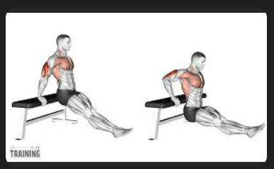
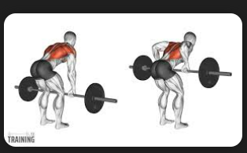
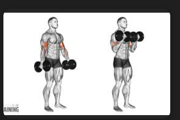
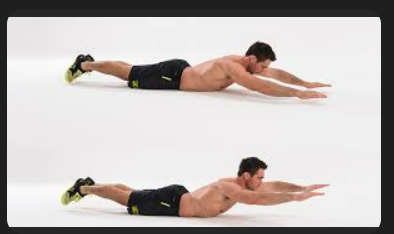
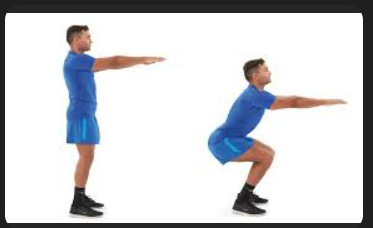
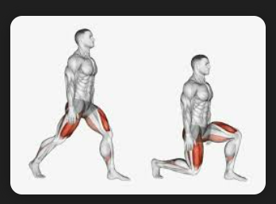
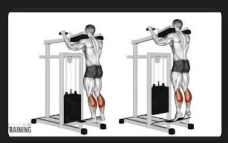

Sample Weekly Workout Plan
Cardio & Strength for Better Heart Health
This simple plan focuses on mixing cardio and strength training. Always warm up for 5–10 minutes before you start.
| Exercise | Muscle / Focus | Intensity Level | Equipment |
|---|---|---|---|
| Brisk Walking (20–30 min) | Cardio / Full Body | Easy | Comfortable shoes |
| Bodyweight Squats (3 × 10) | Legs / Glutes | Moderate | None |
| Push-ups (3 × 8–12) | Chest / Shoulders / Triceps | Moderate | Mat (optional) |
| Plank (3 × 20–30 sec) | Core | Moderate | Mat (optional) |
Adjust the sets and reps based on your current fitness level. If you are new to exercise, start slowly and focus on good form.
Simplified Push, Pull & Legs Routine
The Push–Pull–Legs (PPL) method is a simple way to train all major muscle groups while giving each area enough recovery time.
Push Day (Chest, Shoulders, Triceps)
-
 Push-ups – 3 × 8–12
Push-ups – 3 × 8–12
-
 Shoulder Press (dumbbells or resistance bands) – 3 × 10
Shoulder Press (dumbbells or resistance bands) – 3 × 10
-

Tricep Dips – 3 × 8–12
Pull Day (Back, Biceps)
-

Bodyweight Rows (or resistance band rows) – 3 × 10 -

Bicep Curls – 3 × 10–12 -

Superman Hold – 3 × 20–30 sec
Leg Day (Lower Body)
-

Squats – 3 × 10 -

Lunges – 3 × 8 each leg -

Calf Raises – 3 × 15–20
This beginner-friendly PPL routine can be repeated 2–3 times per week depending on your schedule.
The Importance of Rest Days
Rest days are just as important as workout days. Many beginners underestimate how essential recovery is for progress.
- Muscle repair: Your muscles grow and strengthen during rest, not while you are exercising.
- Injury prevention: Overtraining increases the risk of strains, joint pain, and fatigue.
- Better performance: Proper rest helps you come back stronger and improve workout quality.
- Energy recovery: Rest helps restore motivation and keeps your routine sustainable.
A good schedule for beginners includes 1–2 rest days per week. Rest days can still include light walking or stretching.